Overview
In addition to imputation methods, VIM provides a number of functions, which can be used to plot results in sophisticated ways.
This vignette showcases selected plotting function, which are very supportive in context with visualizing missing and imputed values.
Data
The following example demonstrates the functionality of the plotting functions using a subset of sleep. In order to emphasize the features of the methods, the missing values in the dataset are imputed via kNN() or regressionImp(). Both are powerful donor-based imputation methods and also included in the VIM package. (see vignette("donorImp"))
library(VIM) library(magrittr) dataset <- sleep[, c("Dream", "NonD", "BodyWgt", "Span")] # dataset with missings dataset$BodyWgt <- log(dataset$BodyWgt) dataset$Span <- log(dataset$Span) imp_knn <- kNN(dataset) # dataset with imputed values
To keep things as simple as possible, the plotting functions in VIM uses three main colors. Each color represents a property:
- BLUE observed values are highlighted in blue
- RED missing values are highlighted in red
- ORANGE imputed values are highlighted in orange
Function aggr()
The aggr() function calculates or plots the amount of missing/imputed values in each variable and the amount of missing/imputed values in certain combinations of variables.
aggr(dataset)
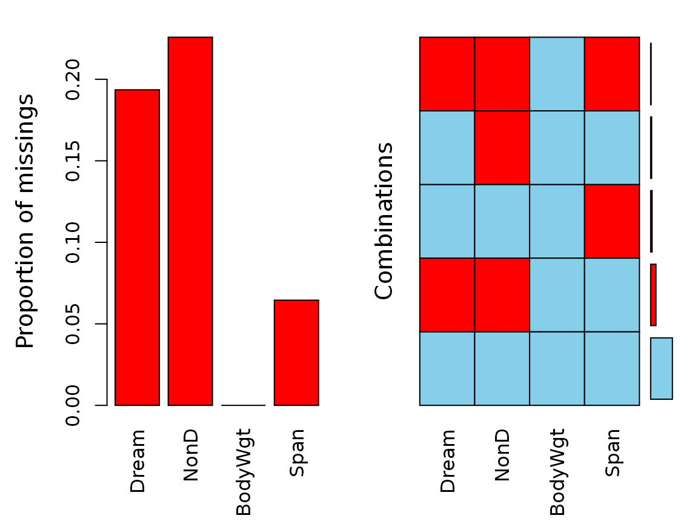
aggr(imp_knn, delimiter = "_imp")
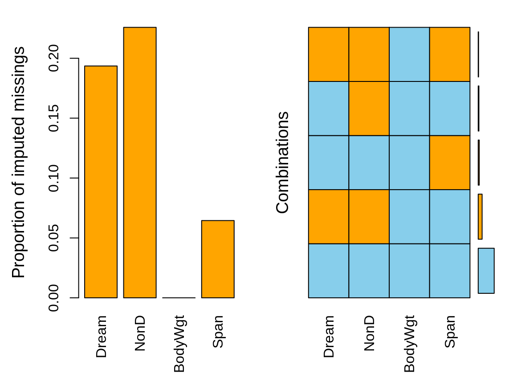
The plots indicate that all missing values in the dataset are imputed via knn().
Function barMiss()
The barMiss() function provides a barplot with highlighting of missing/imputed values in other variables by splitting each bar into two parts. Additionally, information about missing/imputed values in the variable of interest is shown on the right hand side.
If only.miss=TRUE, the missing/imputed values in the variable of interest are visualized by one bar on the right hand side. If additional variables are supplied, this bar is again split into two parts according to missingness/number of imputed missings in the additional variables.
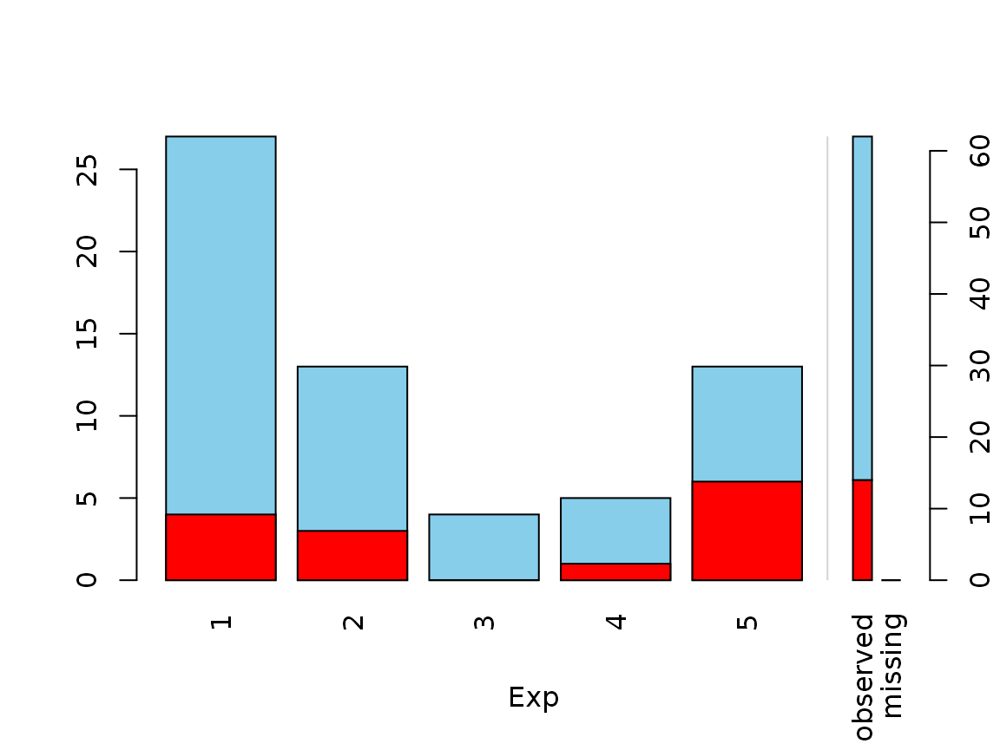
# for imputed values x_IMPUTED <- regressionImp(NonD ~ Sleep, data = x) #> There still missing values in variable NonD . Probably due to missing values in the regressors. barMiss(x_IMPUTED, delimiter = "_imp", only.miss = FALSE)
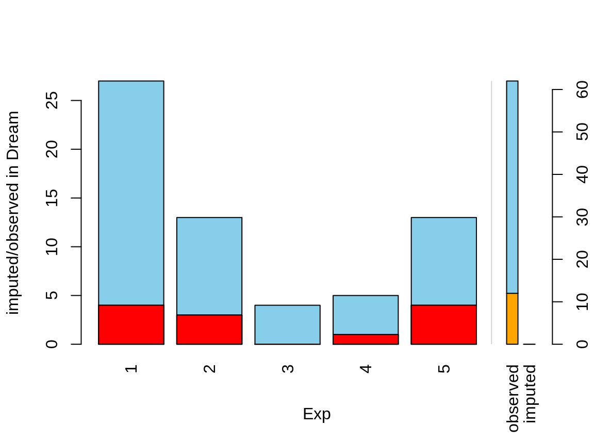 The plot indicates that there are still some missings in NonD. This is because the regression model could not be applied to observations, where Sleep is unobserved.
Function scattMiss()
In addition to a standard scatterplot, lines are plotted in scattMiss() for the missing values in one variable. If there are imputed values, they will be highlighted.
Information about missing values in one variable is included as vertical or horizontal lines, as determined by the side argument. The lines are thereby drawn at the observed x- or y-value. In case of imputed values, they will additionally be highlighted in the scatterplot. Supplementary, percentage coverage ellipses can be drawn to give a clue about the shape of the bivariate data distribution.
In contrast to the other examples, regressionImp() is used for imputing missing values. This has been done deliberately to highlight the functionality of scattMiss(). The following plots makes it easy to indentify missing/imputed values.
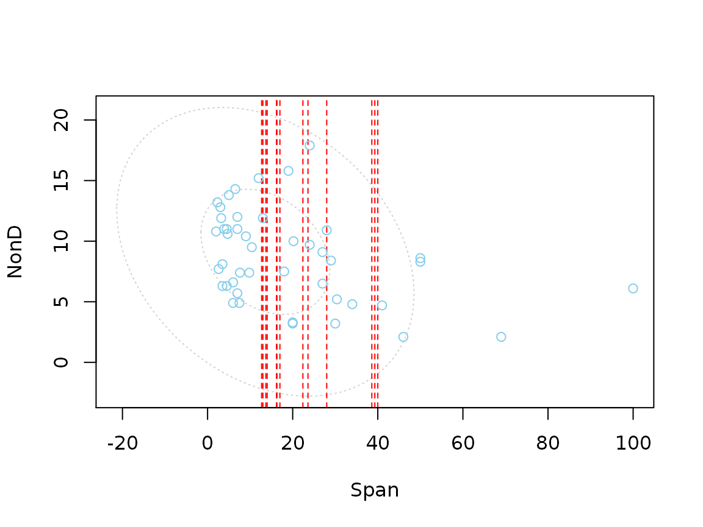
# for imputed values imp_regression <- regressionImp(NonD ~ Sleep, dataset) #> There still missing values in variable NonD . Probably due to missing values in the regressors. scattMiss(imp_regression[,-3], delimiter = "_imp")
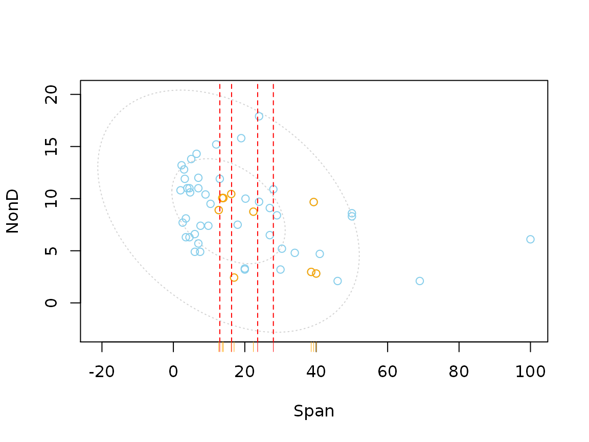
The plot indicates that there are still some missings in NonD. This is because the regression model could not be applied to observations, where Sleep is unobserved.
Function parcoordMiss()
The parcoordMiss() function provides parallel coordinate plots with adjustments for missing/imputed values. Missing values in the plotted variables may be represented by a point above the corresponding coordinate axis to prevent disconnected lines. In addition, observations with missing/imputed values in selected variables may be highlighted.
In parallel coordinate plots, the variables are represented by parallel axes. Each observation of the scaled data is shown as a line. Observations with missing/imputed values in selected variables may thereby be highlighted. However, plotting variables with missing values results in disconnected lines, making it impossible to trace the respective observations across the graph. As a remedy, missing values may be represented by a point above the corresponding coordinate axis, which is separated from the main plot by a small gap and a horizontal line, as determined by plotNA. Connected lines can then be drawn for all observations. Nevertheless, a caveat of this display is that it may draw attention away from the main relationships between the variables.
dataset <- sleep[, c( "NonD", "BodyWgt", "BrainWgt", "Exp")] # dataset with missings dataset$BodyWgt <- log(dataset$BodyWgt) dataset$BrainWgt <- log(dataset$BrainWgt) imp_knn <- kNN(dataset) # dataset with imputed values ## for missing values parcoordMiss(dataset, plotvars = 2:4, interactive = FALSE)

## for imputed values parcoordMiss(imp_knn, delimiter = "_imp", plotvars=2:4, interactive = FALSE)
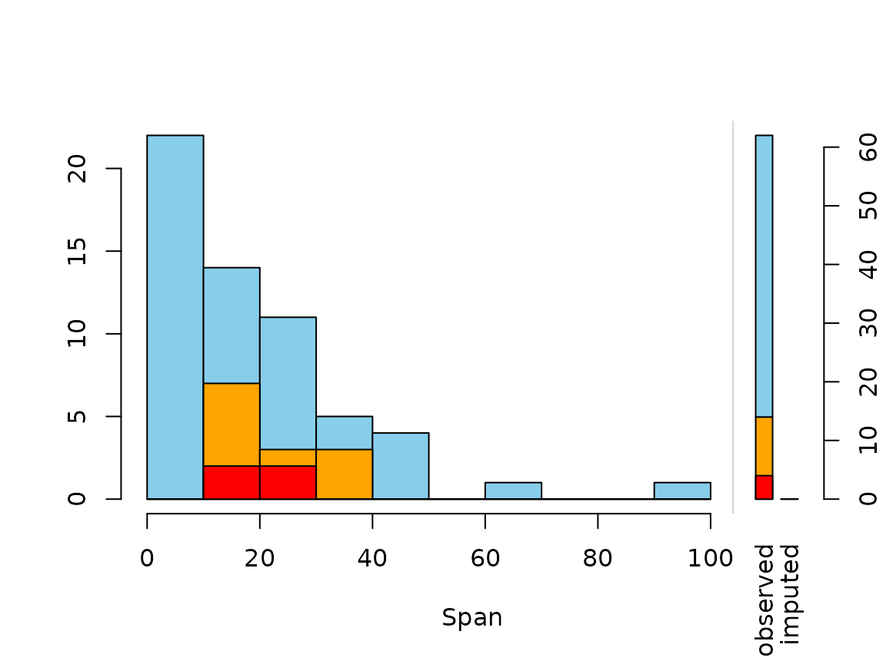
The blue lines in the plots represent the observed values in NonD. The red and orange lines indicate missing and imputed values respectively in NonD.
Function matrixplot()
The matrixplot() function creats a matrix plot, in which all cells of a data matrix are visualized by rectangles. Available data is coded according to a continuous color scheme, while missing/imputed data is visualized by a clearly distinguishable color.
x <- sleep[, c("Dream", "NonD","Sleep", "BodyWgt")] x$BodyWgt <- log(x$BodyWgt) # for missing values matrixplot(x, sortby="BodyWgt")
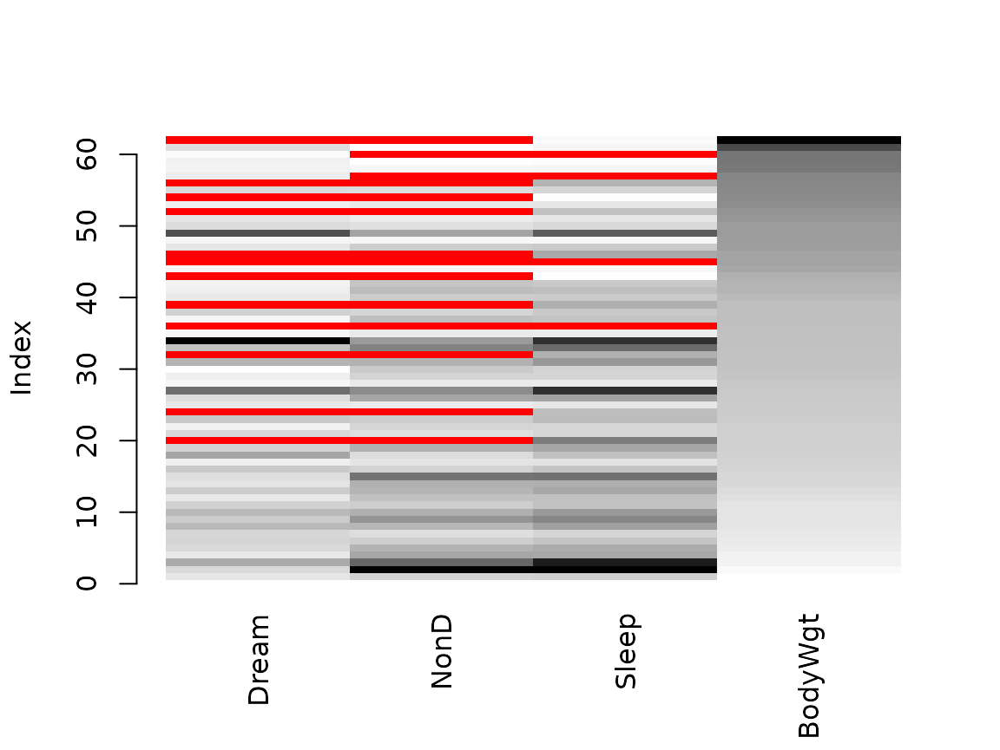
# for imputed values - multiple variable imputation with regrssionImp() x_IMPUTED <- regressionImp(NonD+Dream ~ Sleep, data = x) #> There still missing values in variable NonD . Probably due to missing values in the regressors. #> There still missing values in variable Dream . Probably due to missing values in the regressors. matrixplot(x_IMPUTED, delimiter = "_imp", sortby="BodyWgt")

Function marginplot()
In addition to a standard scatterplot, information about missing/imputed values is shown in the plot margins. Furthermore, imputed values are highlighted in the scatterplot.
Boxplots for available and missing/imputed data, as well as univariate scatterplots for missing/imputed values in one variable are shown in the plot margins.Imputed values in either of the variables are highlighted in the scatterplot.
Furthermore, the frequencies of the missing/imputed values can be displayed by a number (lower left of the plot). The number in the lower left corner is the number of observations that are missing/imputed in both variables.
dataset <- sleep[, c("Dream", "NonD", "BodyWgt", "Span")] dataset$BodyWgt <- log(dataset$BodyWgt) dataset$Span <- log(dataset$Span) imp_knn <- kNN(dataset, variable = "NonD") dataset[, c("NonD", "Span")] %>% marginplot()
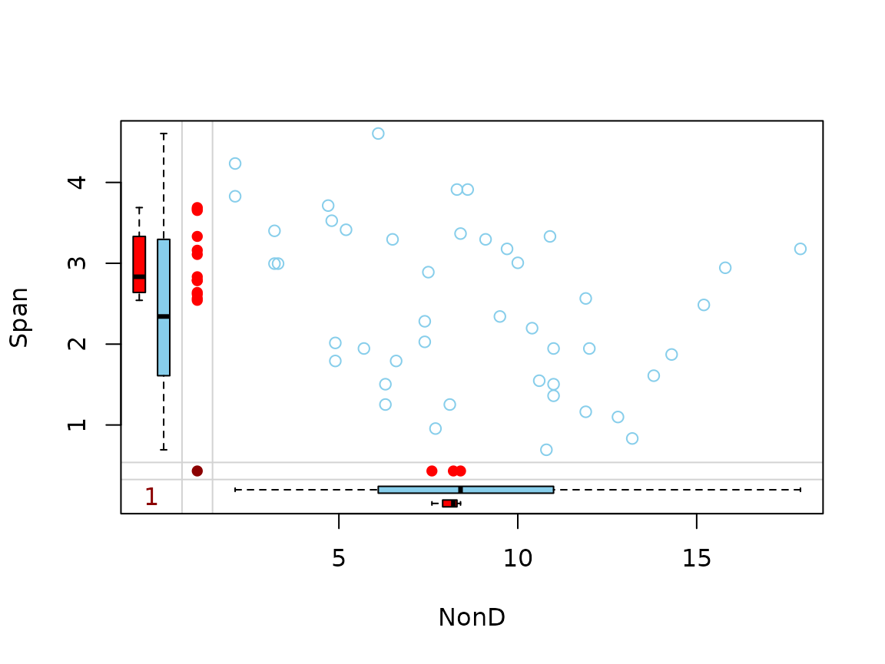
imp_knn[, c("NonD", "Span", "NonD_imp")] %>% marginplot(delimiter = "_imp")
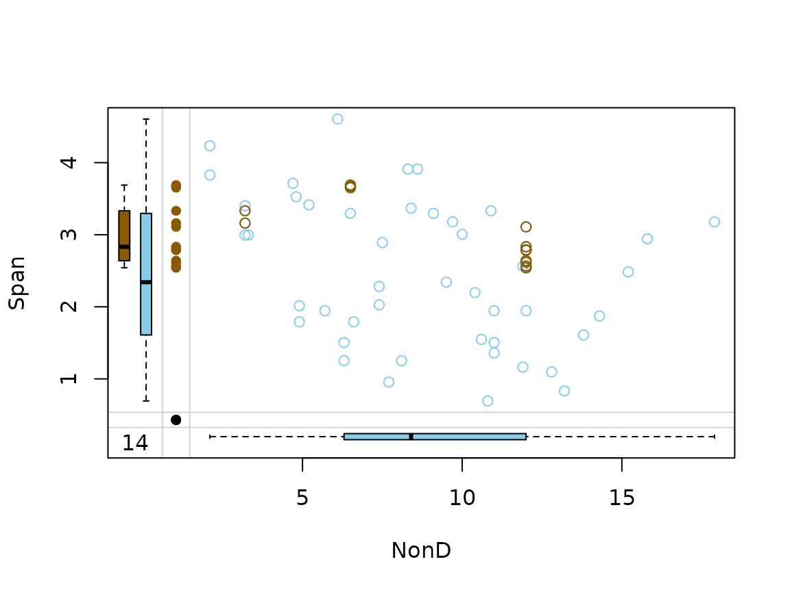
Function marginmatrix()
The marginmatrix() function creates a scatterplot matrix with information about missing/imputed values in the plot margins of each panel.
## for missing values x <- sleep[, 2:4] x[,1] <- log10(x[,1]) marginmatrix(x)
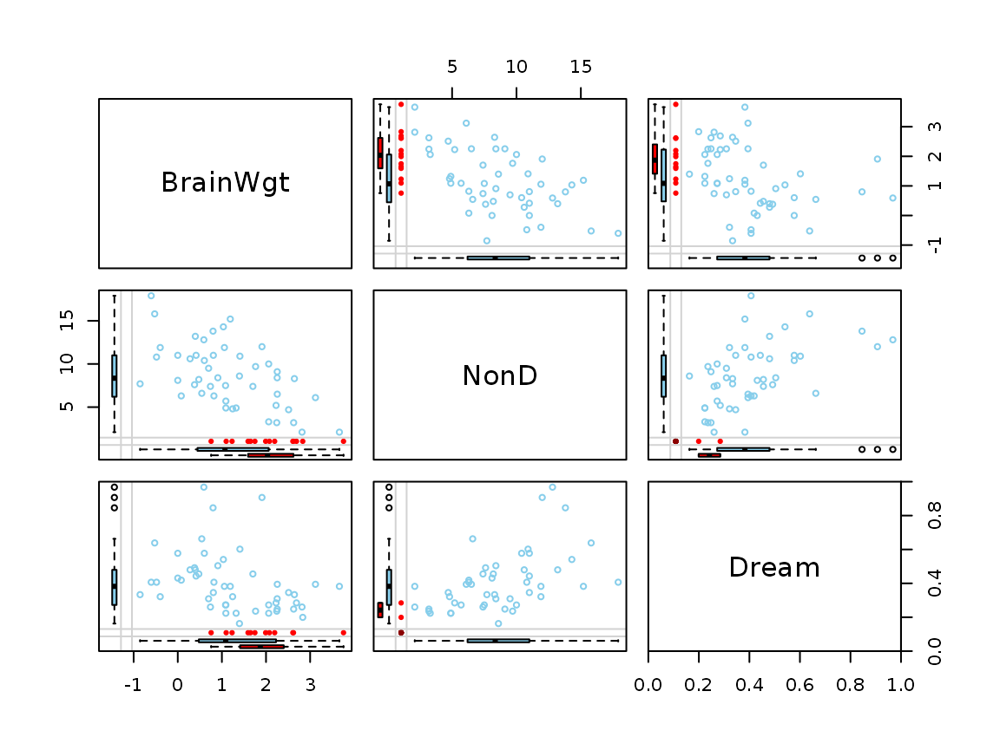
## for imputed values x_imp <- irmi(sleep[, 2:4]) x_imp[,1] <- log10(x_imp[,1]) marginmatrix(x_imp, delimiter = "_imp")
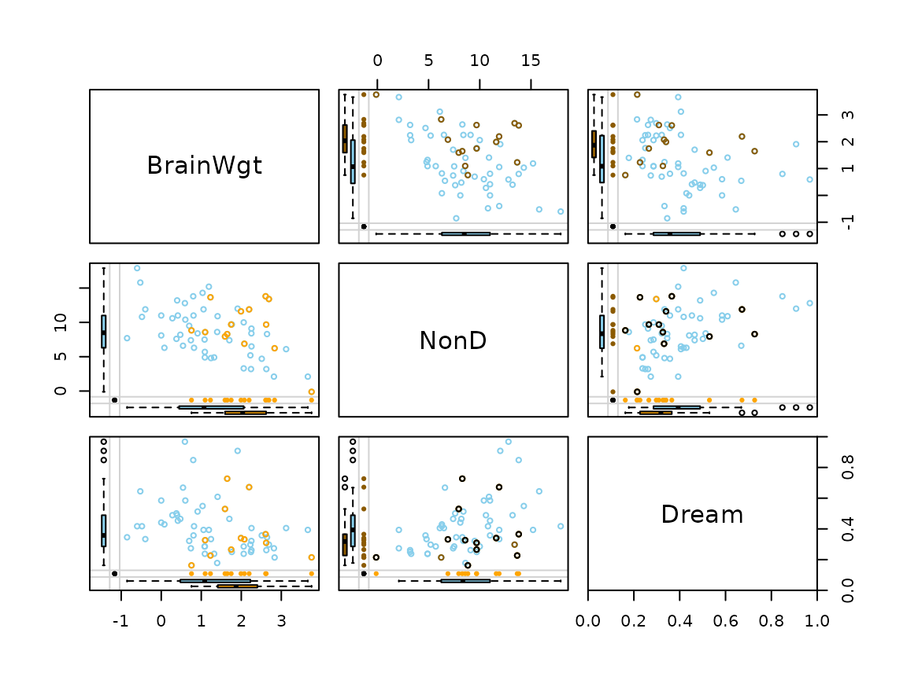